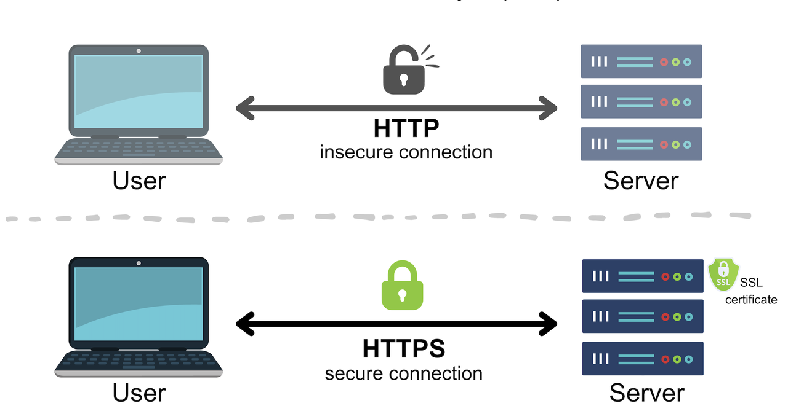

Firewalls form the backbone of network security, protecting
Industry Exams Plus from unauthorized traffic. Our firewalls use
advanced rule sets to filter malicious traffic while ensuring
smooth communication for legitimate users.
Features:
Dynamic packet inspection
Automated port blocking
Real-time monitoring and alerts
Inbound & outbound traffic monitoring
Threat intelligence integration
VPN compatibility for secure remote access
Customizable access control policies
Regular security updates and patches
Deep packet inspection (DPI) for advanced threat detection
Load balancing for optimized traffic management
Advanced Firewall Configuration & ACL Management
Beyond basic rules, Industry Exams Plus employs granular ACLs (Access
Control Lists) and deep packet inspection to fine-tune traffic flows.
This advanced configuration reduces the attack surface and ensures only
the most necessary services remain open.
ACL Rule
Action
Description
Deny Telnet (Port 23)
Deny
Blocks all inbound telnet connections to secure remote access.
Allow HTTPS (Port 443)
Permit
Grants secure browser traffic for legitimate users.
Allow SSH (Port 22) Admin Subnet
Permit (Source: 192.168.10.0/24)
Restricts SSH access to a trusted management subnet only.
Our firewall system also leverages real-time threat intelligence feeds.
This ensures malicious IPs and known attack vectors are swiftly blocked.
Below is a sample CLI snippet illustrating how we manage ACL rules in a
Cisco environment:
access-list 101 deny tcp any any eq 23
access-list 101 permit tcp 192.168.10.0 0.0.0.255 host 192.168.1.10 eq 22
access-list 101 permit tcp any host 192.168.1.10 eq 443
interface GigabitEthernet0/1
ip access-group 101 in
Proper ACL design is crucial for mitigating unauthorized access
attempts. We update these rules regularly as part of our change
management process to align with new features, user requirements, or
emerging security threats.
SSL Encryption
SSL encrypts all communication, safeguarding sensitive data and
preventing man-in-the-middle attacks.
Certificates authenticate our server and establish trust with
end-users through HTTPS connections.

SSL uses a secure handshake protocol to initiate encrypted
sessions between clients and servers.
Comprehensive Cloud Security
Hosting Industry Exams Plus on scalable platforms like AWS and Azure
requires advanced configurations to protect cloud infrastructure. Here’s
how we address various layers of cloud security:
Security Groups & NACLs
Layered inbound & outbound traffic filters
Granular rules for ports & protocols
Region-based IP restrictions
Key Management
AWS KMS or Azure Key Vault integration
Rotating encryption keys
Strict IAM roles for key usage
IAM Policies
Least privilege principle enforced
Multi-Factor Authentication (MFA)
Automated credential rotation
These measures combine to secure data at rest, data in transit, and the
entire orchestrated environment—ensuring only the right people and
services have access to mission-critical components.
Cloudflare DDoS Protection
Cloudflare Features:
Real-time IP blocking for malicious traffic
Global network infrastructure for DDoS mitigation
Web Application Firewalls (WAF) to block malicious scripts
Network Segmentation & VLAN Implementation
Dividing the network into isolated segments is essential for limiting
lateral movement and containing potential breaches. VLANs and subnetting
at Industry Exams Plus help protect sensitive data stores from general
user traffic.
Public VLAN
40%
Management VLAN
20%
Database VLAN
15%
Application VLAN
25%
Each VLAN is governed by ACLs and firewall rules that align with its data
classification. This layered approach ensures any compromise in one
segment cannot spread unchecked throughout the entire network.
Database Hardening
Step 1: Data Encryption
All sensitive data is encrypted using AES standards.
Step 2: Role-Based Access
Only authorized personnel can access the database using RBAC.
Step 3: Vulnerability Scanning
Regular scans identify weaknesses before exploitation.
Access Control Policies
Access Control Diagram:

RBAC and MFA ensure each user has the least privileges necessary,
minimizing risks of data breaches.
Access control policies include automated session timeouts, login
monitoring, and restrictions based on user roles and locations.
Localhost & VM Security
Many of our developers and administrators work on VMs or local
environments that connect to our cloud servers. Industry Exams Plus
enforces strict localhost security best practices to prevent
unauthorized escalations and pivot attacks.
Host-Based Firewalls
We rely on iptables or Windows Defender Firewall with well-defined
inbound/outbound rules on each VM.
SSH Key Management
SSH key pairs with passphrases are mandatory for all remote
connections, ensuring minimal password-based logins.
Routine Patching
Host OS and VM software are updated weekly to fix vulnerabilities
and maintain optimal performance.
These protocols mitigate risks from developer machines, bridging the gap
between local workflows and production-ready security.
Regular Security Audits
Audit Process:
1
Initial risk assessment
2
Vulnerability scanning using automated tools
3
Compliance reporting and continuous improvement plans
Baseline Configuration & Routine Auditing
Maintaining security isn’t a one-time event. Industry Exams Plus
performs baseline configuration checks upon deployment, then audits
these baselines regularly to detect deviations and newly discovered
threats.
Phase 1: System Baseline
Define known-good configurations for OS, packages, and security
policies. Document them in version control for easy reference.
Phase 2: Continuous Monitoring
Tools like Nagios and Splunk monitor real-time logs, identifying
anomalies before they escalate into incidents.
Phase 3: Scheduled Security Audits
Weekly or monthly scans using Nessus, OpenVAS, or in-house scripts
to compare current states against the baseline.
Phase 4: Remediation & Documentation
All discrepancies trigger a ticket in our system. Post-remediation,
the baseline is updated to reflect the new best practices.
By combining thorough baselining with active auditing, we continually
refine our security posture and keep Industry Exams Plus resilient
against evolving threats.